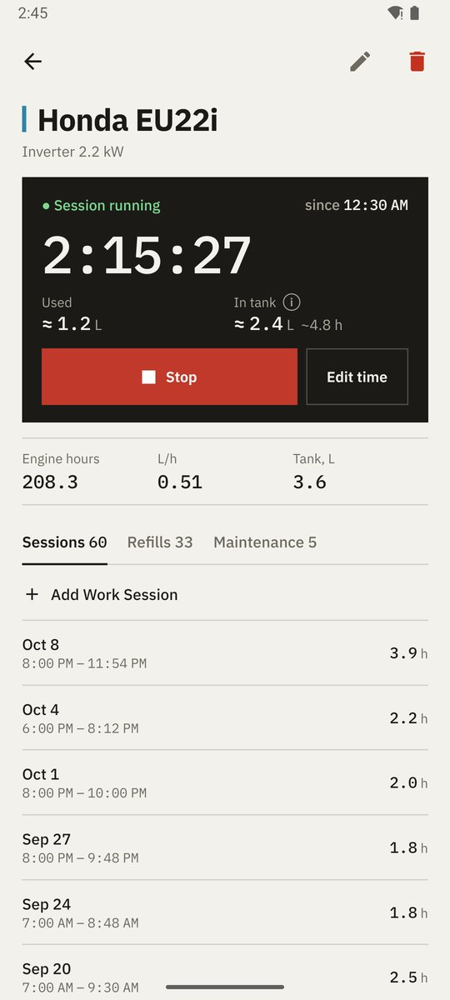
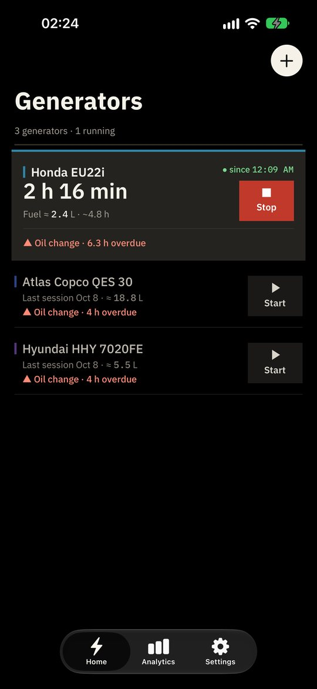
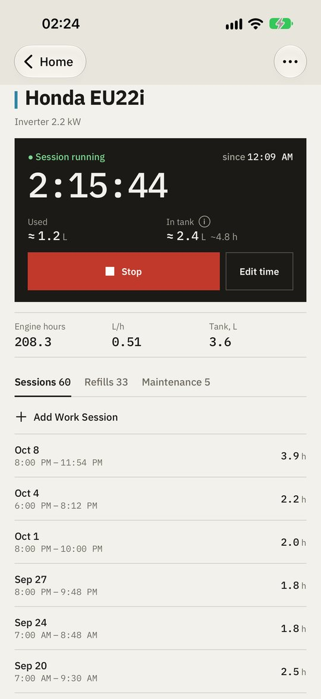
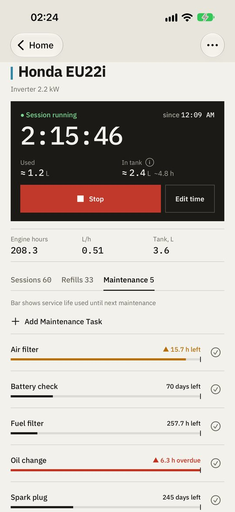
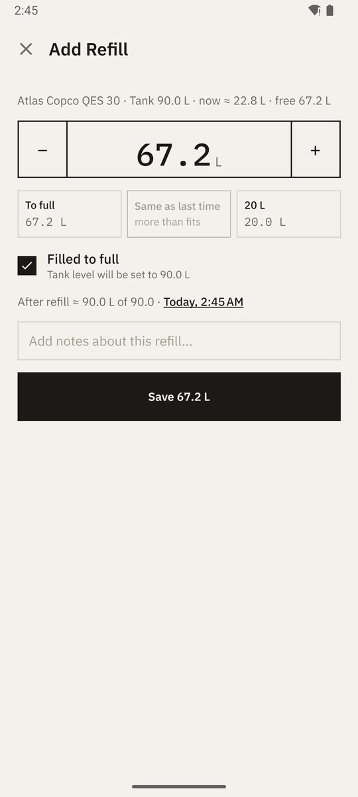
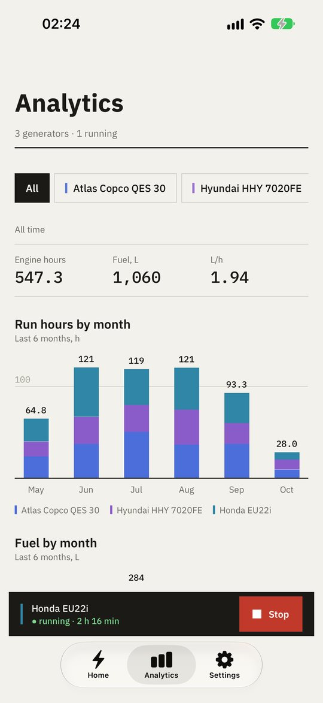
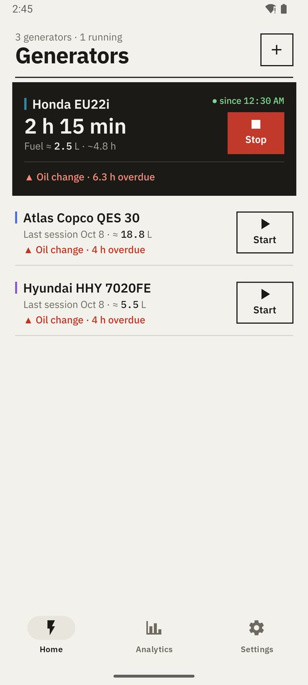
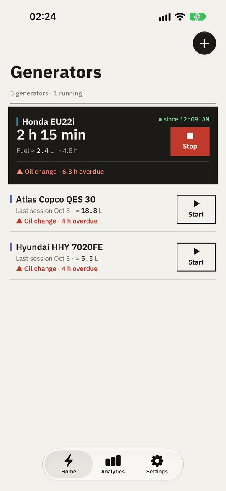

Start and stop from Home
Running generators move to the top with a live timer and a big Stop button; idle ones sit below with Start. Stopped by mistake? Undo brings the session back with its original start time.
Now on Google Play and the App Store
Start and stop a generator in one tap, see how much fuel is left and never miss an oil change — for one backup unit at home or a whole fleet. Works offline. Syncs only if you want it to.
No ads · No tracking · Open source


Features
The power goes out — start the generator in one tap — keep an eye on it — don't miss the service. Everything else the app works out for you.
Running generators move to the top with a live timer and a big Stop button; idle ones sit below with Start. Stopped by mistake? Undo brings the session back with its original start time.
Give a generator its tank size and the app keeps a running estimate — "≈ 2.4 L · ~4.8 h left" — from refills and run time. A refill takes a few taps: to full, same as last time or a stepper.
Run hours and fuel by month for the last six months, split by generator colour — petrol and diesel are never summed into one bar — plus totals per generator.
Oil, filters, spark plugs — set intervals by engine hours, by days or both. Each task shows how much of the interval is used, and overdue work is flagged on the home screen with ▲.
From a single home backup unit to a rental fleet. Several generators can run at once; a live bar keeps the running ones a tap away on every screen.
Sign in to keep a phone and a tablet in step. Edits made offline merge safely once you are back online.
Warm paper light theme, true-black dark theme for OLED and night outages, plus a guide to the system red filter. English or Ukrainian.
How it works
No setup wizard, no manual. Everything else the app works out by itself.
Name, model and power. One unit or a whole fleet — each gets its own history.
Tap Start on the home screen when the power goes out and Stop when it comes back. Fuel used and engine hours are worked out for you.
Set intervals in hours or days. The home screen marks what is overdue with ▲, so service happens before a breakdown.

Live tracking
A live clock to the second, fuel used and fuel left in the tank, and big square buttons that are easy to hit in the dark during an outage or with gloves on a job site. Forgot to tap? Fix the start time later.

Maintenance
Each task tracks engine hours and days since the last service and shows the used part of the interval as a bar with a limit tick. Overdue and due-soon tasks are flagged on the home screen; one tap marks a task as serviced.

Refills
Presets for "to full" and "same as last time", a stepper for anything else and a preview of the level after the refill. A full tank calibrates the estimate, and the app tells you when it was off.

Analytics
Square monthly bars split by generator colour, all-time totals with litres per hour and a per-generator list — filter to one generator or look at all of them.
Compared
You can write hours down anywhere. The difference is what you can do with them afterwards.
| What you get | Paper logbook | Spreadsheet | Generator Tracker |
|---|---|---|---|
| Works without internet | Yes | Partly | Yes |
| Hours added up automatically | No | Partly | Yes |
| Fuel consumption per hour | No | Partly | Yes |
| Service reminders by hours and days | No | No | Yes |
| Fuel left estimate and live timer | No | No | Yes |
| Monthly charts per generator | No | Partly | Yes |
| Same data on phone and tablet | No | Yes | Yes |
Platforms
Not a web page in a wrapper. Material 3 on Android, the native iOS design — including Liquid Glass — on iPhone and iPad.

Material 3 navigation, system dialogs and dark theme. Phones, tablets and foldables.
Android 7.0 and newer
Available on Google Play →
Native navigation bars, SwiftUI forms, SF Symbols and Liquid Glass on iOS 26.
iOS and iPadOS 16.4 and newer
Available on the App Store →Privacy
Generator Tracker stores everything on your device first. An account is optional and used only to sync your own records between your devices.
Read the privacy policy →Every record is saved on the device; the app is fully usable without an account or a connection.
No analytics SDKs, no advertising IDs, no profiling. Nothing is sold or shared.
The full source code is on GitHub under the MIT license — anyone can check what the app does.
What's new
Generator Tracker 3.0 is redesigned around what you do during a power cut: start the generator in one tap, keep an eye on it, and never miss maintenance.
FAQ
No. There are no ads, no subscriptions and no in-app purchases.
Yes. Everything is stored on your device and works offline. If you sign in, changes sync automatically when a connection is available.
Android phones, tablets and foldables on Android 7.0 and newer; iPhone and iPad on iOS and iPadOS 16.4 and newer.
Yes — add as many as you need. Each one keeps its own sessions, refills, service plan and statistics.
Data stored only on your phone is removed when you delete it in the app or uninstall the app. To delete your account and everything synced to the cloud, open Settings → Delete Account; if you no longer have the app, email yuri.valigursky@gmail.com. Details are in the privacy policy.
English and Ukrainian. The app follows your device language and can be switched in Settings.
Yes. Generator Tracker is open source under the MIT license — the full code, including this website, is on GitHub.
Offline-first and private. Installs in a minute.